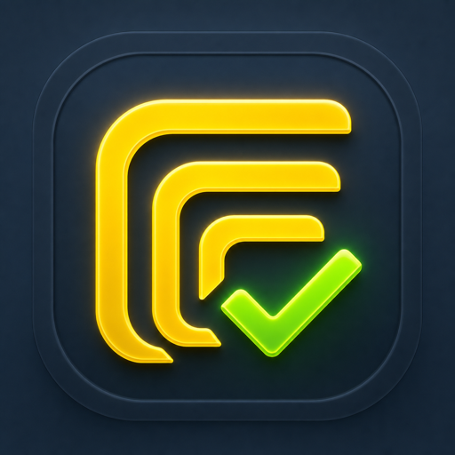

Create collapsible nested lists and let completed subtasks roll up into the larger goal.
A focused to-do system for iPhone
Doing Doing Done
Turn big goals into clear next steps, protect your focus, and make daily momentum visible—with flexible priorities, recurring routines, streaks, and rewards.

Built for visible progress
Doing Doing Done combines a capable task manager with a calm, encouraging experience designed to help you choose a useful next action and finish it.
Use priority levels, deadlines, recurring schedules, and a customizable daily task mix.
Start focused sessions, shuffle your next task, and celebrate progress with streaks and badges.
Privacy Policy
Last updated July 29, 2026
This Privacy Policy explains how Doing Doing Done, developed by Richard Lavey, handles information when you use the iPhone application.
1. Information We Collect
Doing Doing Done does not require an account and does not collect personal information. Your tasks, subtasks, completion history, focus sessions, preferences, streaks, and badges are stored locally on your device.
2. How Your Information Is Used
Information you enter is used on your device to provide app features such as task organization, progress tracking, recurring tasks, focus sessions, and personalized settings.
3. Notifications
If you grant notification permission, Doing Doing Done may schedule local reminders for deadlines and recurring tasks. These notifications are created and managed on your device. You can change notification access at any time in iOS Settings.
4. Analytics, Advertising, and Tracking
Doing Doing Done does not include third-party advertising, analytics, or tracking technologies. It does not sell, rent, or share personal information with third parties.
5. Data Storage and Deletion
App data is stored locally on your device. You can delete individual items within the app. Deleting the app removes its locally stored data, subject to the normal operation of your device and any device backups you control.
6. Children's Privacy
Doing Doing Done is a general productivity app and does not knowingly collect personal information from children.
7. Changes to This Policy
This policy may be updated as the app changes. Any update will be posted on this page with a revised “Last updated” date.
8. Contact
If you have questions about this Privacy Policy or Doing Doing Done, email updates@realexpense.com.
Support
For help, feedback, or questions about Doing Doing Done, email updates@realexpense.com. Please include your iOS version and a short description of what happened. Do not include sensitive information.